远程拷贝scp
回忆
- 上次我们可以使用ssh
- 远程登录这台ubuntu
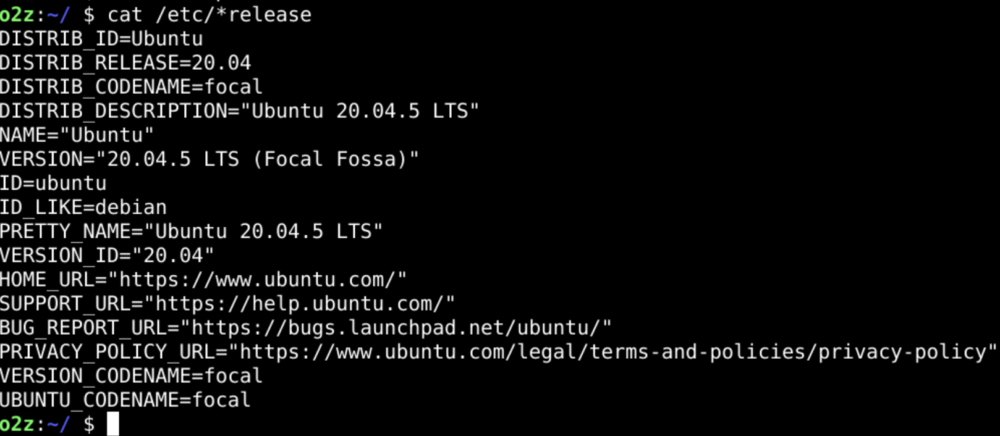
- 首先要安装ssh
- 然后要启动ssh 服务
- 可以设置ssh的登陆端口
- 登陆之后用户可以使用自己的宿主文件夹和shell
- 可以获得用户应有的一切权限
- 既然远程登录后可以读写文件
- 我可以把这个文件从云上拷贝到本地么？🤔
远程拷贝scp
- 首先要查看一下scp的manual
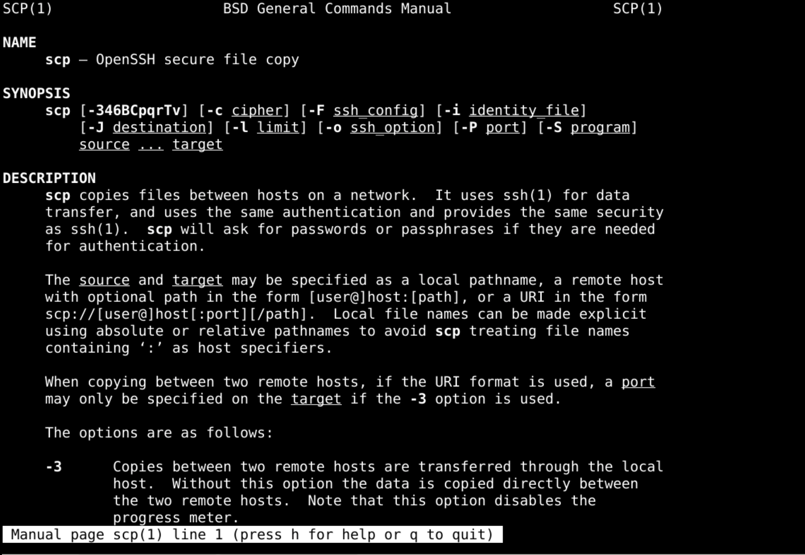
本地ip
ifconfig
- 第一步还是获得ip地址
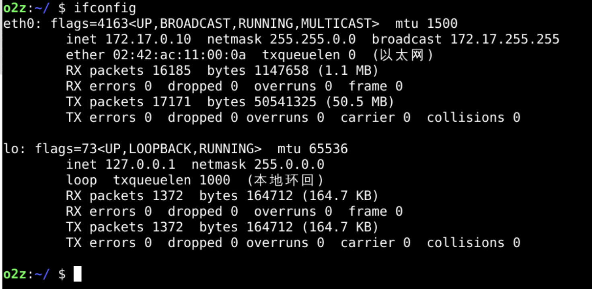
- 我们目前只能获得内网ipv4的地址
- 172.17.0.10
- 远程的云服务器可以用相应的公网ip就可以
得到本机密码
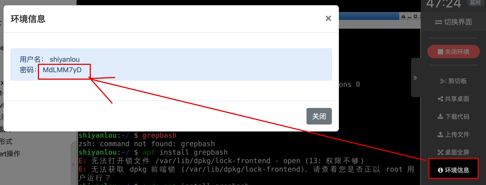
- 然后就可以拷贝了
- 我们也可以使用自己创建的user
- o2z
scp远程拷贝
touch oeasy.py
scp -P 22000 oeasy.py o2z@172.17.0.10:/home/o2z/Code
- scp是命令名
- 如果没有可以安装
- 被拷贝源文件
- oeasy.py是本地的文件名称
- 也就是被拷贝源文件
- 目标地址
- shiyanlou是远程服务器用户名
- 172.17.0.10是远程服务器ip
- /home/o2z/Code是服务器的路径
- 先源后目标和cp的语法很像
- 这是要把本地的文件上传到服务器上
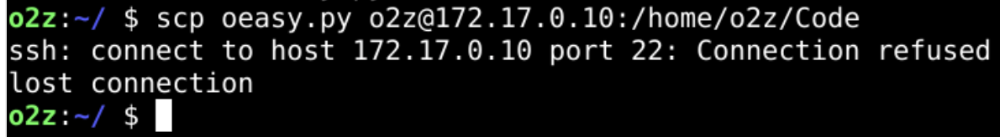
- 端口出了问题
端口
- scp使用的是ssh协议
- 使用的端口是ssh默认的22端口
- 如果服务器使用的不是默认的22
- 查询帮助
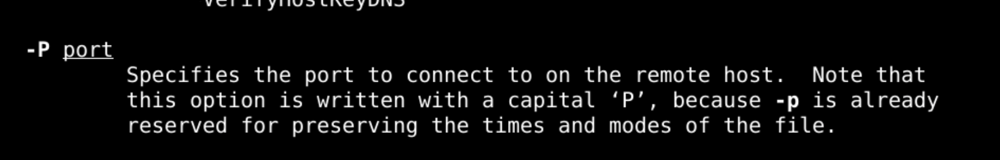
- 可以用-P指定端口
- 注意是大写
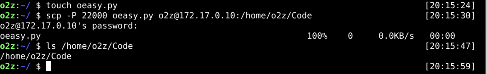
- 可是好像出了问题
问题
- 我们是把本地的oeasy.py
- 拷贝到/home/o2z/Code
- 这个Code是本来不存在的
- 所以就把oeasy.py改名叫做Code
- 这和我们的想象不一致
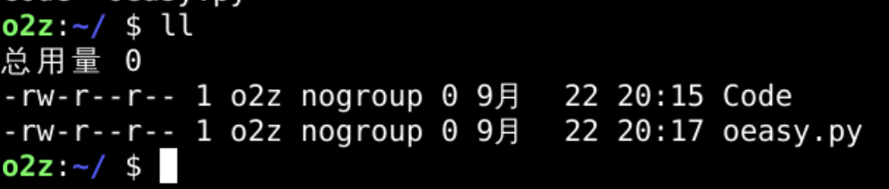
- 如何修改呢？
修改
- 先在本地删除Code
- 再md这个Code
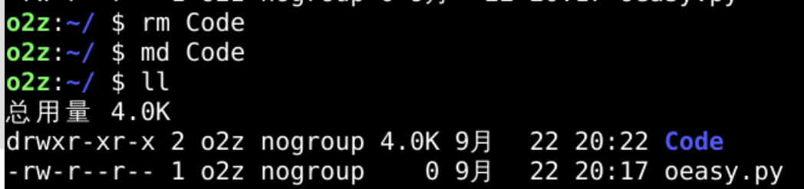
- 然后上传到已经存在的Code文件夹
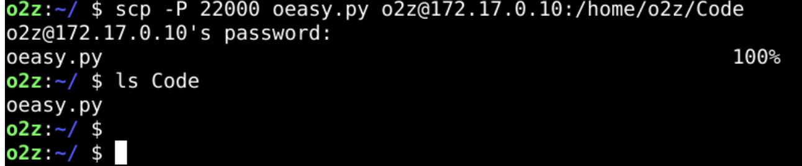
- 上传成功
- 如何下载文件夹呢？
递归拷贝
- 源地址为云上地址
- 目标地址为本地地址
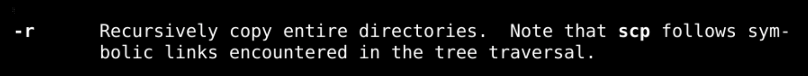
- 可以在参数里面加上-r
- recursive 递归的拷贝里面所有的子文件夹和文件
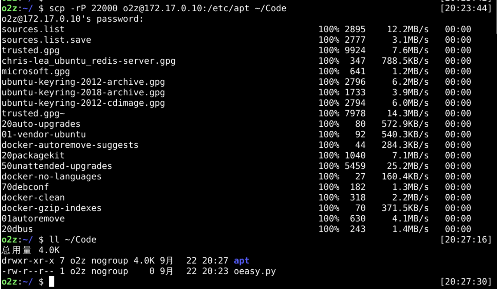
- 可以有更多的信息细节吗？
细节
- -v
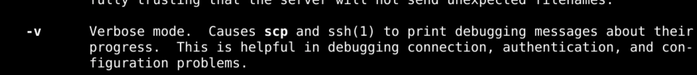
- 可以使用详细模式verbose
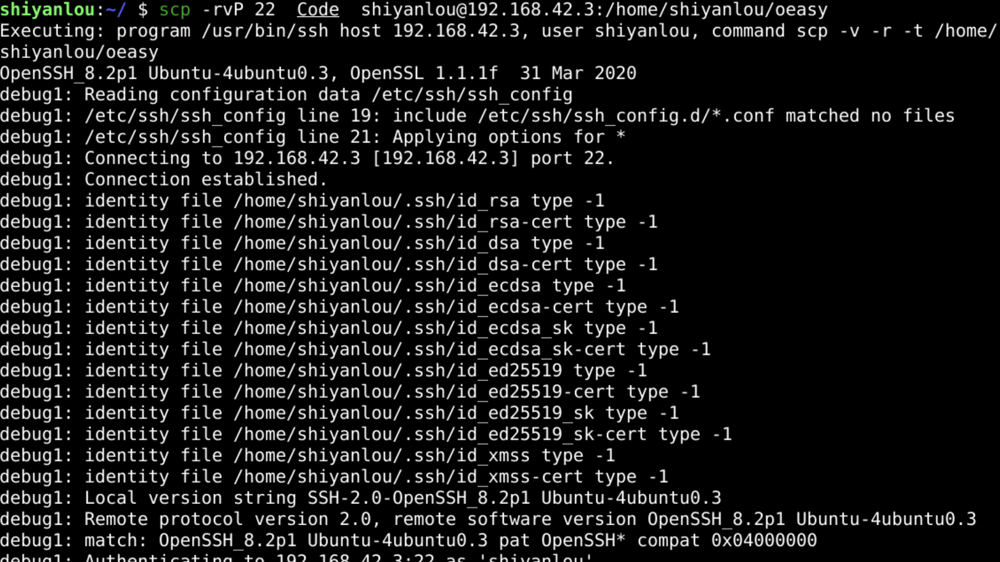
总结 🤨
- 我们这次使用scp
- 远程进行文件拷贝
- 还是挺方便的
- 有一些参数
- -P 端口
- -r 递归
- -v 详细
- 这样拷贝文件真的很方便
- 但是有的时候想要执行一些命令

- 却告诉我没有权限
- 这应该怎么解决呢？🤔
- 下次再说！👋